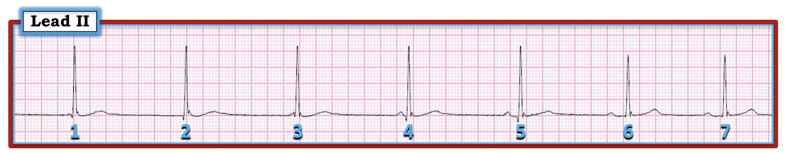
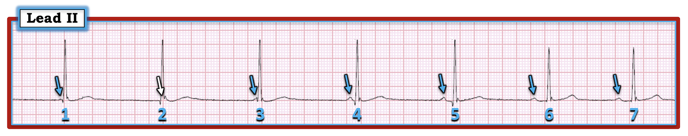
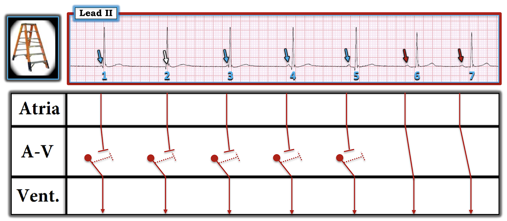

ECG Blog #192 — Phân ly nhĩ thất do chiếm quyền – do nhường nhịp – blốc AV?
Tôi sẽ đặt tên cho case hôm nay là Phần-2 của một loạt bài ngắn về phân ly nhĩ thất (AV dissociation) (Phần-1 là ECG Blog #191). Nhịp mà tôi muốn bàn luận được trình bày ở Hình-1.
CÂU HỎI: Lựa chọn nào dưới đây đưa ra diễn giải ĐÚNG NHẤT cho nhịp được trình bày ở Hình-1?
- GỢI Ý: Có hơn 1 lựa chọn đúng một phần — nhưng chỉ 1 lựa chọn đưa ra câu trả lời ĐÚNG NHẤT cho câu hỏi này.
Các phương án để chọn:
Lựa chọn A: Nhịp này là phân ly nhĩ thất. Có nhịp xoang và nhịp bộ nối.
Lựa chọn B: Nhịp này là blốc AV độ 2. Có thoát bộ nối — nhưng không có nhát nào dẫn truyền từ xoang.
Lựa chọn C: Có nhịp chậm xoang kèm loạn nhịp xoang, tạm thời dẫn tới nhịp thoát bộ nối. Điều này dẫn tới phân ly nhĩ thất do “nhường nhịp” (“default”).
Lựa chọn D: Có blốc AV độ 2 mức độ cao — vì ít nhất vài sóng P không được dẫn truyền.
Lựa chọn E: Có blốc AV độ 3 (hoàn toàn).


=======================================
LƯU Ý #1: Một số bạn đọc có thể muốn, ở thời điểm này, xem ECG Video dài 5 phút trước khi đọc Suy nghĩ của tôi về nhịp ở Hình-1. Bạn có thể xem lại Suy nghĩ của tôi vào bất cứ lúc nào (phần này nằm bên dưới ECG MP-9).
=======================================

ECG Media PEARL #9 (4:45 phút) hôm nay — ôn lại 3 Nguyên nhân của phân ly nhĩ thất — và nhấn mạnh vì sao phân ly nhĩ thất không phải là một với blốc AV hoàn toàn. LƯU Ý: Video điện tâm đồ này cung cấp góc nhìn giúp diễn giải tối ưu nhịp ở Hình-1.
=======================================
LƯU Ý #2: Nhiều nội dung hơn nữa về phân ly nhĩ thất đã được trình bày trong ECG Blog #191 — bao gồm ECG Media Pearl #8 và một tệp PDF 7 trang về phân biệt phân ly nhĩ thất với blốc AV hoàn toàn.
=======================================
Suy nghĩ CỦA TÔI về nhịp ở Hình-1:
Như mọi khi — tôi thấy quy trình chính xác nhất và tiết kiệm thời gian nhất để diễn giải rối loạn nhịp là dùng cách tiếp cận Ps, Qs & 3R (Để ôn lại cách tiếp cận hệ thống này trong diễn giải rối loạn nhịp — Xin xem ECG Blog #185).
- ĐIỂM THEN CHỐT #1 — Để rõ ràng, tôi đã đánh dấu các sóng P trên bản ghi hôm nay (Hình-2). Mũi tên XANH chỉ các sóng P (hoặc ít nhất là một phần của sóng P) mà tôi có thể chắc chắn. Dùng compa đo (calipers) cho thấy gần như chắc chắn có một sóng P khác đang ẩn trong phức bộ QRS của nhát #2 (mũi tên TRẮNG). Tôi nhận thấy việc đơn giản là đánh dấu sóng P theo cách này hỗ trợ vô giá trong việc làm rõ mối liên hệ giữa hoạt động nhĩ và các phức bộ QRS lân cận.
- Tiếp tục đánh giá theo Ps, Qs & 3R — Phức bộ QRS trông hẹp trên chuyển đạo theo dõi đơn lẻ này. Khoảng R-R có vẻ hằng định (khoảng ~ 7 ô lớn, tương ứng tần số ~45/phút) đối với 5 nhát đầu tiên trên bản ghi.
- ĐIỂM THEN CHỐT #2: NẾU bạn dùng compa đo — hẳn bạn đã ngay lập tức nhận ra rằng nhát #6 xuất hiện hơi sớm hơn dự kiến (tức là, khoảng R-R giữa nhát #5-6 ngắn hơn khoảng R-R của 5 nhát trước đó!). Nhận ra một nhát xuất hiện sớm hơn dự kiến thường là một MANH MỐI tuyệt vời cho thấy nhát đó được dẫn truyền! Việc nhát tiếp theo (tức là nhát #7) xuất hiện còn sớm hơn nữa — cùng với — việc thấy khoảng PR hợp lý và bằng nhau đứng trước nhát #6 và 7 cho chúng ta biết rằng cả hai nhát này đều được dẫn truyền từ xoang!
- Hợp lý khi nhát #6 và 7 ở Hình-2 được dẫn truyền từ xoang — và 5 nhát trước đó không được dẫn truyền. Lý do là khoảng PR trước 5 nhát đầu tiên đơn giản là quá ngắn để dẫn truyền (hoặc, với nhát #1, 2 và 3 — sóng P trùng với phức bộ QRS). Vì phức bộ QRS của nhát #1 đến 5 hẹp và không có sóng P dẫn truyền đi trước — 5 nhát đầu tiên này ở Hình-2 là một nhịp thoát bộ nối với tần số ~45/phút.


ĐIỂM THEN CHỐT #3: Lưu ý rằng mặc dù phức bộ QRS của cả 7 nhát trên bản ghi này đều hẹp — nhưng hình dạng QRS hơi khác ở 5 nhát thoát bộ nối (tức là, sóng R rõ ràng cao hơn ở nhát #1 đến 5, so với sóng R của nhát #6 và 7). Vì vị trí bên trong nút AV nơi một nhát thoát bộ nối có thể phát sinh có thể hơi khác với vị trí trong nút AV mà một nhát bình thường dẫn truyền từ xoang đi qua — đôi khi (không phải lúc nào cũng vậy!) bạn có thể thấy hình dạng QRS hơi khác ở các nhát bộ nối. Khi dấu hiệu này xuất hiện, nó có thể rất hữu ích để cho bạn biết một nhát nào đó có hay không được dẫn truyền.
- Ví dụ — khoảng PR trước nhát #5 là ~0.16 giây, tức là có thể đủ dài để được dẫn truyền. Nhưng những lý do khiến chúng ta biết nhát #5 không được dẫn truyền từ xoang là: i) Vì nhát tiếp theo ( = nhát #6) xuất hiện hơi sớm hơn dự kiến; ii) Vì các khoảng PR đứng trước nhát #6 và 7 (dẫn truyền từ xoang) bằng nhau và dài hơn (~0.21 giây) khoảng PR đứng trước nhát #5; và, iii) Vì hình dạng QRS của nhát #5 giống hình dạng QRS của các nhát bộ nối khác (tức là nhát #1 đến 4) — và khác hình dạng QRS của 2 nhát dẫn truyền từ xoang ở cuối bản ghi (tức là nhát #6 và 7).
ĐIỂM THEN CHỐT #4: Theo định nghĩa — có phân ly nhĩ thất thoáng qua trên bản ghi hôm nay vì: i) Có một số sóng P không liên quan (tức là không dẫn truyền) tới các phức bộ QRS lân cận (tức là Chúng ta thấy điều này ở nhát #1 đến 5); và, ii) 2 nhát cuối trên bản ghi ( = nhát #6 và 7) được dẫn truyền từ xoang, nên phân ly nhĩ thất không còn hiện diện ở cuối bản ghi.
Tổng hợp tất cả lại: Như đã nhấn mạnh trong ECG Media Pearl #9 (và cả trong đoạn trích PDF 7 trang tôi đăng ở ECG Blog #191) ở trên — có 3 Nguyên nhân gây phân ly nhĩ thất. Đó là: i) Blốc AV (trong đó một hoặc nhiều sóng P lẽ ra phải dẫn truyền lại không dẫn truyền) độ 2 hoặc độ 3; ii) Phân ly nhĩ thất do “Chiếm quyền” (Usurpation) (trong đó một nhịp bộ nối gia tốc giành lấy chức năng tạo nhịp); và/hoặc iii) Phân ly nhĩ thất do “Nhường nhịp” (Default) (trong đó sự chậm lại = “nhường nhịp” của ổ tạo nhịp nút xoang nhĩ (SA) cho phép một ổ tạo nhịp thoát bộ nối xuất hiện).
- CÂU TRẢ LỜI đúng của case hôm nay là Lựa chọn C — vì rối loạn nhịp nguyên phát là nhịp chậm xoang kèm loạn nhịp xoang. Trong khoảng thời gian mà tần số nút xoang giảm xuống dưới tần số thoát vốn có của nút AV — sẽ có một nhịp thoát bộ nối (tức là, điều này xảy ra ở nhát #1 đến 5). Về cuối bản ghi — khoảng P-P ngắn lại khi tần số sóng P xoang tăng lên, cho phép sóng P xoang “bắt được” QRS ở 2 nhát cuối của bản ghi. Như vậy, có phân ly nhĩ thất do “nhường nhịp” vì nhịp xoang chậm lại, tạm thời dẫn tới nhịp thoát bộ nối.
- Lựa chọn A không đúng — vì không đúng khi nói rằng một nhịp “là” phân ly nhĩ thất. Phân ly nhĩ thất không bao giờ là một nhịp. Thay vào đó, phân ly nhĩ thất chỉ đơn giản là mô tả thực tế rằng trong một khoảng thời gian (tức là, ở 5 nhát đầu tiên trên bản ghi này) — các sóng P tạm thời không liên quan tới các phức bộ QRS lân cận.
- Lựa chọn B không đúng — vì không có bằng chứng nào của blốc AV trên bản ghi này. Lý do là không sóng P nào trong số các sóng P không dẫn truyền ở phần đầu bản ghi có “cơ hội” để dẫn truyền (tức là,tất cả chúng đều xuất hiện quá gần QRS lân cận). Một lý do khác khiến Lựa chọn B sai — đó là 2 nhát cuối trên bản ghi này được dẫn truyền từ xoang.
- Lựa chọn D và E cũng không đúng — vì như với Lựa chọn B, hoàn toàn không có bằng chứng nào của blốc AV trên bản ghi này (tức là, không sóng P nào trong số các sóng P không dẫn truyền có “cơ hội” để dẫn truyền).
ĐIỂM THEN CHỐT #5: Chúng ta không biết gì về ý nghĩa lâm sàng (hoặc sự thiếu ý nghĩa lâm sàng) của bản ghi này Nhịp này có thể lành tính — hoặc — có thể là bệnh lý. Tất cả phụ thuộc vào bối cảnh lâm sàng!
- Tình huống lâm sàng #1: NẾU bệnh nhân trong case hôm nay là một người vốn khỏe mạnh, hoàn toàn không triệu chứng, có thiên hướng thể thao, được làm điện tâm đồ này vì ai đó nghe thấy nhịp tim rất chậm và hơi không đều — thì nhiều khả năng không có gì đáng lo ngại. Hiệu ứng luyện tập với tăng trương lực phế vị có thể giải thích nhịp chậm xoang và loạn nhịp xoang với tần số đôi khi giảm xuống dưới 50/phút. Phân ly nhĩ thất do “nhường nhịp” không hiếm gặp ở những người như vậy — ở họ, nhịp thoát bộ nối có thể là đáp ứng bình thường (được dự kiến) trong những khoảng thời gian trong ngày khi tần số xoang chậm lại đáng kể.
- Tình huống lâm sàng #2: NẾU ngược lại, bệnh nhân là một người lớn tuổi có tiền sử ngất — thì nhịp ở Hình-2 có thể phù hợp với SSS (hội chứng suy nút xoang – Sick Sinus Syndrome). Điều này không có nghĩa là cần đặt máy tạo nhịp vĩnh viễn ngay — nhưng diễn tiến tự nhiên của SSS thường là một giai đoạn tiền triệu kéo dài (đôi khi tới một thập kỷ hoặc hơn) — trong đó nhịp chậm xoang kèm loạn nhịp xoang là những biểu hiện nhịp ban đầu thường gặp nhất. Trong trường hợp này — rõ ràng cần theo dõi thêm cho bệnh nhân để xem có phát hiện thêm rối loạn nhịp nào phù hợp với SSS hay không (tức là, khoảng ngưng xoang hoặc ngưng xoang; các đợt nhịp chậm nặng hơn; luân phiên giữa rối loạn nhịp nhanh và nhịp chậm, v.v.).
Để rõ ràng — tôi kết thúc case hôm nay bằng một giản đồ bậc thang (laddergram) minh họa (Hình-3).
- ĐIỂM THEN CHỐT #6: Như tôi đã nhấn mạnh trong ECG Blog #188 — dù bạn có thành thạo vẽ giản đồ bậc thang hay không — giản đồ bậc thang là một công cụ giảng dạy tuyệt vời, có thể ngay lập tức làm rõ điều mà người thầy thuốc nghi ngờ đang diễn ra. Ví dụ — Chẳng phải thật DỄ DÀNG để hiểu cơ chế mà tôi đề xuất cho nhịp ở Hình-3 sao?

